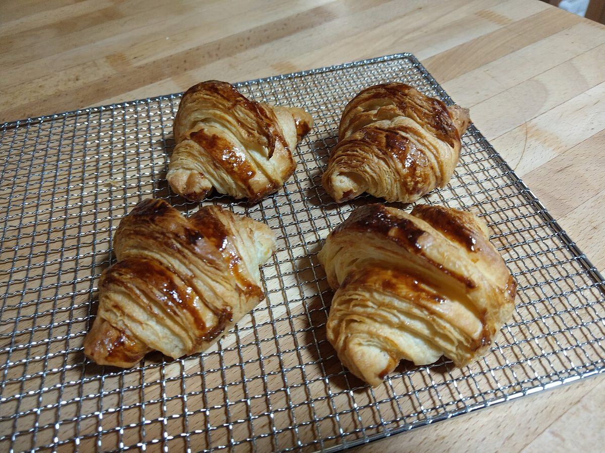
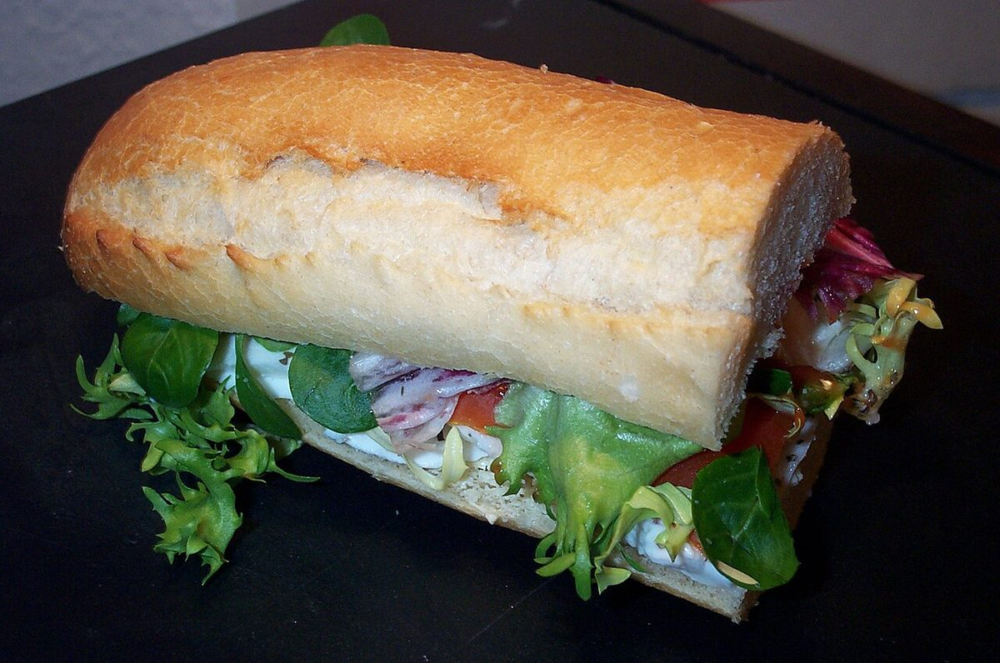
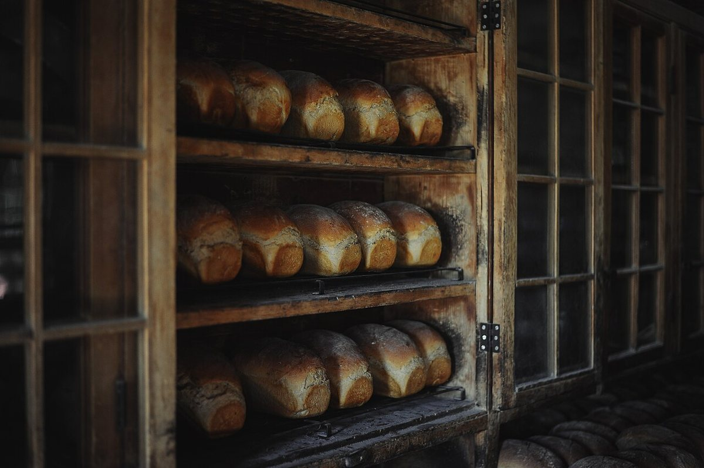
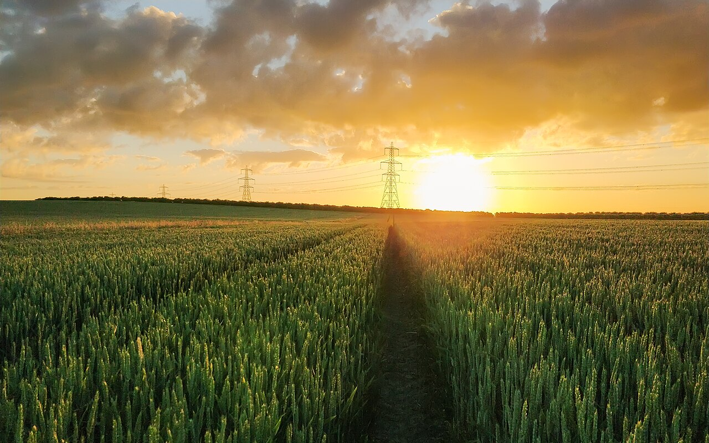
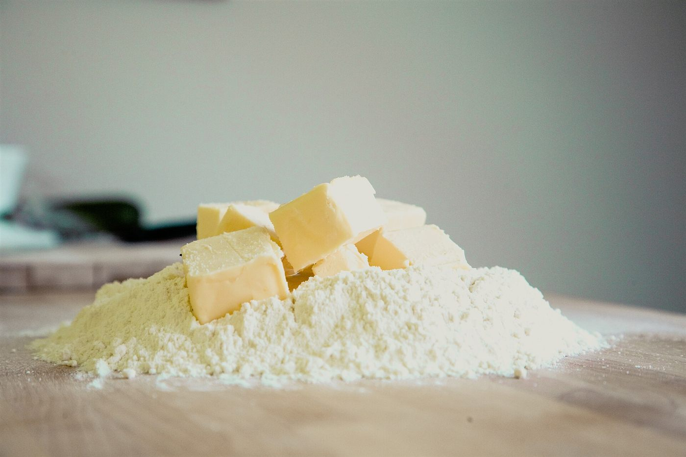

パン
BREAD
おすすめとして紹介されているのは、クロワッサン、バケット、パン・オ・ショコラ。品ぞろえ・価格・営業時間の詳細は準備中です。
クロワッサン
バターの層と、焼きたての香り。
バケット
フランスパンの定番。小麦の風味を味わう一本。
パン・オ・ショコラ
サクッとした生地とチョコレート。




フランスの定番のパンを、地元の小麦と九州の素材で。
朝7:30、焼きたての香ばしさから一日をはじめる。
QUiTTERiE(キトリー)は、都城市中町にある小さなパン屋です。フランスの定番のパンをベースに、地元産の小麦や九州産の素材を使った、ハード系のパン、総菜パン、デザートなどを販売しています。
「フランス仕込み」のパンを、宮崎の素材で焼く。焼きたての香ばしさと食感が魅力とご紹介されています。新鮮な無農薬野菜や、原材料の販売も行っているとのことです。
商業施設オーバルパティオ内のお店として紹介されており、隣のカフェではQUiTTERiEのパンの持ち込みができる、と紹介されています。

おすすめとして紹介されているのは、クロワッサン、バケット、パン・オ・ショコラ。品ぞろえ・価格・営業時間の詳細は準備中です。
バターの層と、焼きたての香り。
フランスパンの定番。小麦の風味を味わう一本。
サクッとした生地とチョコレート。



地元産の小麦と、九州の素材。そこにフランスのパンづくりの考え方を重ねる。QUiTTERiEのパンは、そんな組み合わせから生まれるものとして紹介されています。
開店は朝7:30、売り切れ次第終了と紹介されています(最新の情報はInstagramでご確認ください)。


クロワッサンが香ばしくて、朝のうちに買いに行きたくなります。
イメージ例(創作)パリのパン屋さんを思わせる雰囲気で、バケットの皮がパリッとしていました。
イメージ例(創作)人気のパンは早めになくなるので、午前中に行くのがおすすめです。
イメージ例(創作)※上の口コミは試作用に創作したイメージ例で、実在のお客様の声ではありません。
このページの写真はフリー素材のイメージで、店舗の実際の様子・商品ではありません。実際の写真はご提供いただいたものに差し替えます。